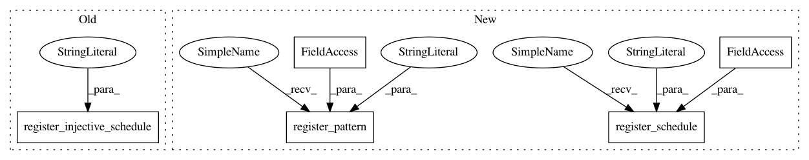

017ff94d15df85ea8476f8ad3ce234470072ae84,python/tvm/relay/op/nn/_nn.py,,,#,570
Before Change
return [topi.nn.upsampling(inputs[0], scale_h, scale_w, layout, method, align_corners)]
reg.register_injective_schedule("nn.upsampling")
// upsampling3d
@reg.register_compute("nn.upsampling3d")
After Change
return [topi.nn.lrn(inputs[0], attrs.size, attrs.axis, attrs.alpha, attrs.beta, attrs.bias)]
reg.register_schedule("nn.lrn", strategy.schedule_lrn)
reg.register_pattern("nn.lrn", OpPattern.OPAQUE)
// upsampling
@reg.register_compute("nn.upsampling")
In pattern: SUPERPATTERN
Frequency: 6
Non-data size: 5
Instances
Project Name: apache/incubator-tvm
Commit Name: 017ff94d15df85ea8476f8ad3ce234470072ae84
Time: 2021-03-11
Author: anshuman.t@huawei.com
File Name: python/tvm/relay/op/nn/_nn.py
Class Name:
Method Name:
Project Name: apache/incubator-tvm
Commit Name: 3734d5f7f8475a2a7897f239b9942c913256fc96
Time: 2021-01-29
Author: liuxin.ai@bytedance.com
File Name: python/tvm/relay/op/nn/_nn.py
Class Name:
Method Name:
Project Name: apache/incubator-tvm
Commit Name: e2fb5039a2472403f2f6dfd65ac6b94de6758271
Time: 2020-06-11
Author: siju.samuel@huawei.com
File Name: python/tvm/relay/op/nn/_nn.py
Class Name:
Method Name:
Project Name: apache/incubator-tvm
Commit Name: 02eb18332a4f9b9491da0d4e8ed01c49fec2ac5e
Time: 2020-04-05
Author: jwfromm@uw.edu
File Name: python/tvm/relay/op/nn/_nn.py
Class Name:
Method Name:
Project Name: apache/incubator-tvm
Commit Name: 68b7e7147fff8960754e4a3a788fd2474749d121
Time: 2021-02-09
Author: kevinthesunwy@gmail.com
File Name: python/tvm/relay/op/nn/_nn.py
Class Name:
Method Name:
Project Name: apache/incubator-tvm
Commit Name: 6d0351a7f0e23eb5428c59a976edd2bfb8207c0d
Time: 2020-10-09
Author: tristan.konolige@gmail.com
File Name: python/tvm/relay/op/nn/_nn.py
Class Name:
Method Name: